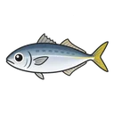
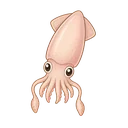
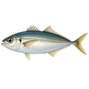
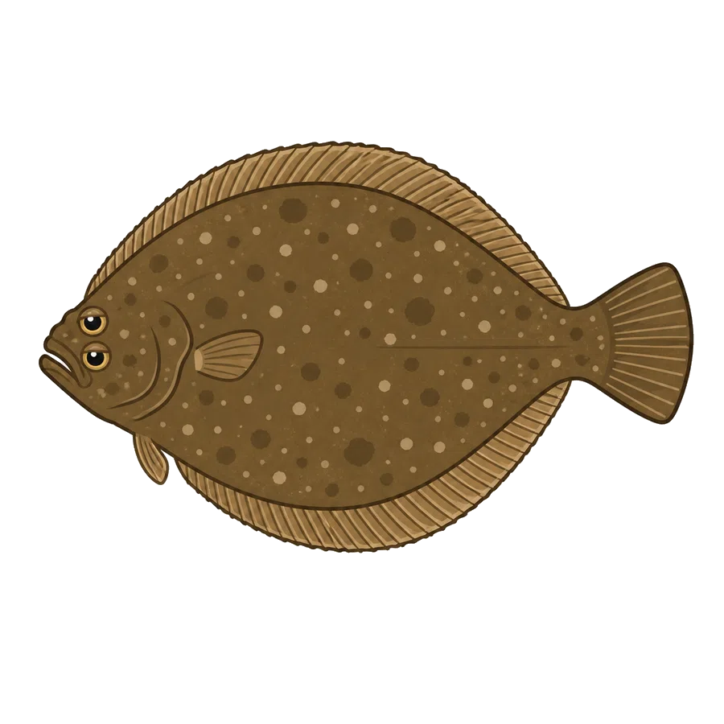
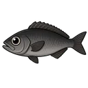
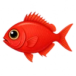

トップ › マダイ › 平塚港 ／ 平塚港エリア › マダイ
 平塚港のマダイ釣果情報
平塚港のマダイ釣果情報
神奈川県平塚市の相模湾に位置する主要漁港。平塚港でのマダイの釣果データは2便記録されています（2026年）。月別の集計では11月下旬前後に釣果が集中する傾向があります。引き続きデータを収集中です。釣果は潮回りや季節によって変動するため、旬の時期を選ぶと安定した釣果が期待できます。出船実績の多い船宿は庄治郎丸（2件）です。このエリアでは計1船宿がマダイの出船実績を持ちます。各船宿の出船スケジュールは直接ご確認ください。
直近7日間の釣果推移 無料
匹数上限（上ヒゲ）の7日推移
平塚港のマダイ旬カレンダー 無料
| 1月 | 2月 | 3月 | 4月 | 5月 | 6月 | 7月 | 8月 | 9月 | 10月 | 11月 | 12月 | |
|---|---|---|---|---|---|---|---|---|---|---|---|---|
| 数釣 |
※ 平塚港でのマダイ釣果データから集計（過去3年）
船宿ランキング 無料
船宿ランキング（今週）
最近の釣果 無料
マダイを他のエリアで探す
★ 今週実績あり（13368便）
過去実績あり（今週ゼロ・505便）を表示
平塚港で実績のある他の魚種
★ 今週実績あり（739便）

アジ（318便）
マルイカ（256便）
ビシアジ（70便）
ヒラメ（33便）
クロムツ（28便）
キンメダイ（16便）過去実績あり（今週ゼロ・550便）を表示
マダイと合わせて釣れる魚
よくある質問
平塚港でマダイが最も釣れる時期はいつですか？
過去3年間（2023〜2026）の平塚港でのマダイ釣果データは151便で、関東のマダイ釣果14,446件のうち14番目の集積地（41エリア中）です。月別では1月（51件）、12月（46件）、2月（22件）が三大ピーク。最も少ない5月でも5件と年間7ヶ月で実績があります。釣果は潮回り・水温・群れの回遊で日々変動するため、最新の釣果報告も併せてご確認ください。
平塚港でのマダイの釣果はどのくらいですか？
過去3年間の平塚港でのマダイ実釣記録103件（個人釣果のみ・乗合便除く）を集計すると、一日1〜2匹が標準的なレンジで、最高実績は15匹です。重量データは112件で、0.5〜7.3kgのレンジで記録されており中位は約1.9kg。サイズ（cm）データは取得数が少ないため省略します。釣果は潮回り・水温・群れの密度で大きく変動するため、本ページの最新の釣果カードも併せてご参考ください。
平塚港でマダイを狙える船宿はどこですか？
過去3年間の平塚港でのマダイ釣果データがある船宿は計2船宿です。記録件数の多い順に庄治郎丸（149便）、豊漁丸（2便）が出船実績豊富です。マダイ釣りはコマセを使ったコマセダイ（コマセマダイ）が主流。タイラバや一つテンヤも人気で、難易度は中級者向けの釣り。神奈川県平塚市の相模湾に位置する主要漁港。各船宿で仕掛け・タックルの貸出有無や出船スケジュールが異なるため、予約時にお問い合わせください。